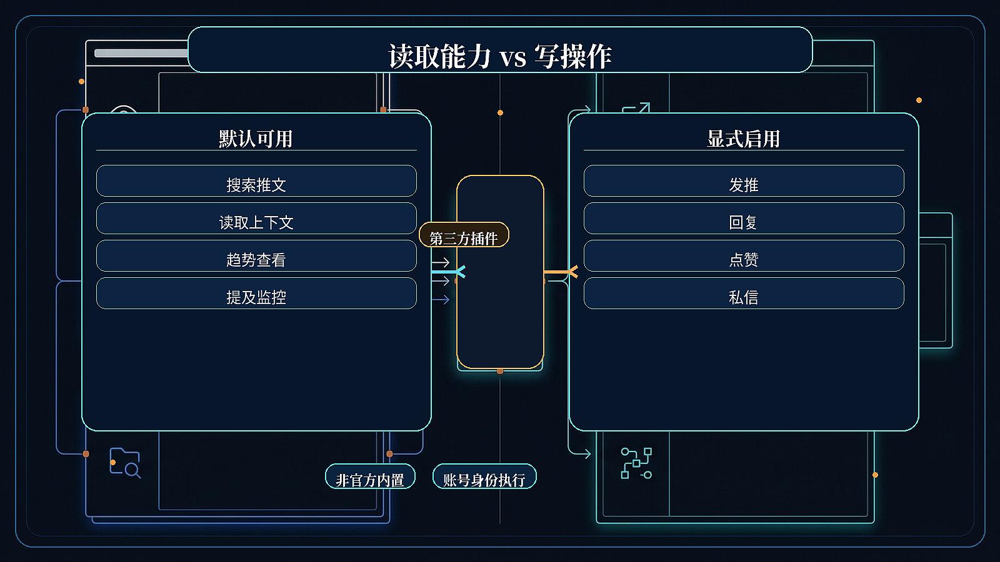
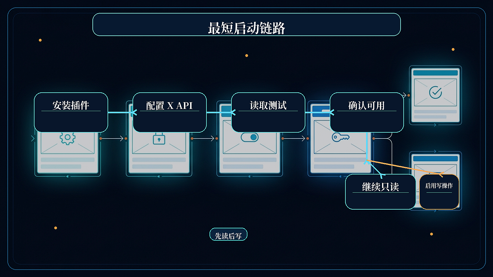
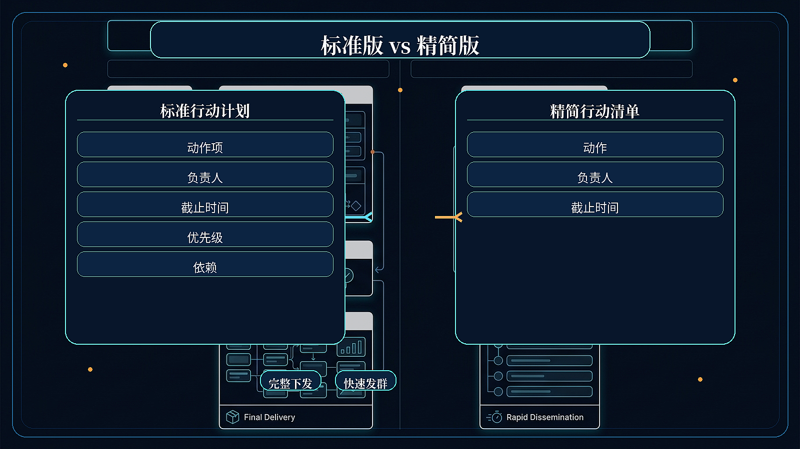
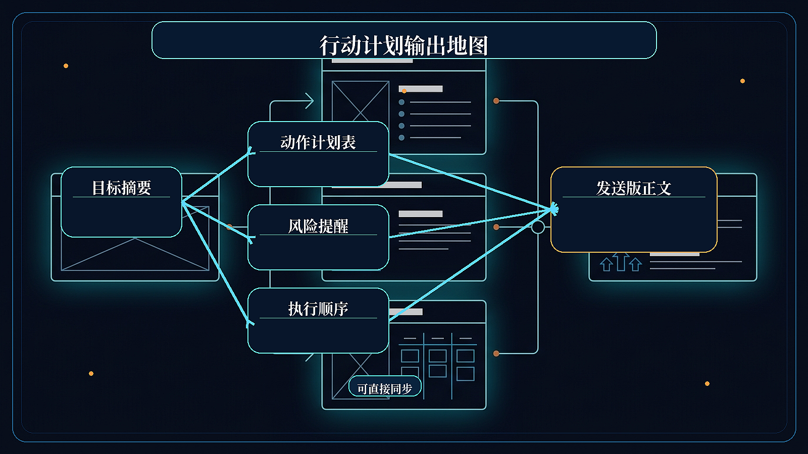
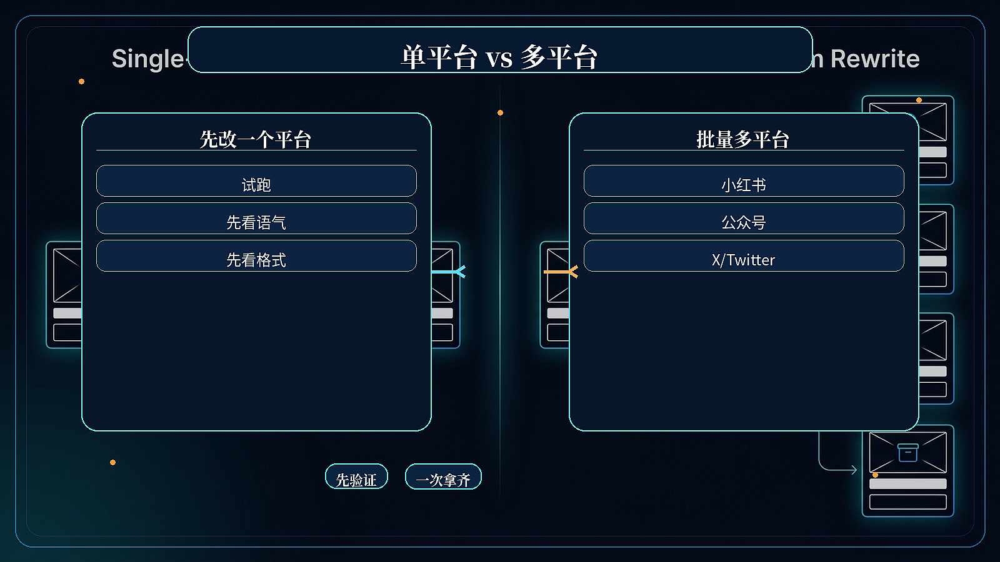
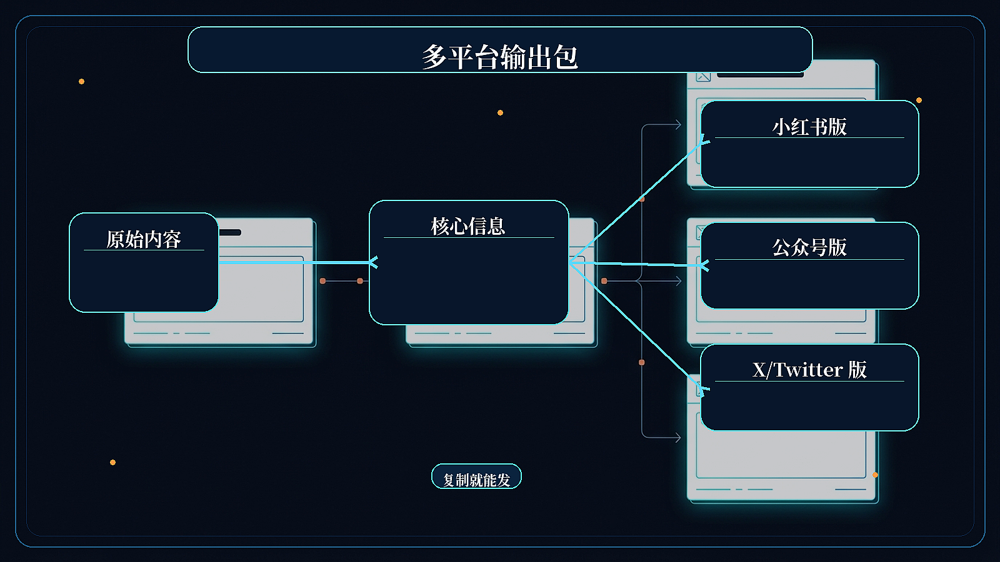
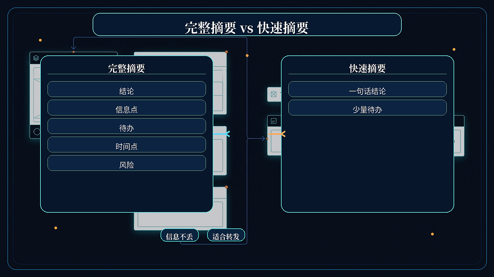
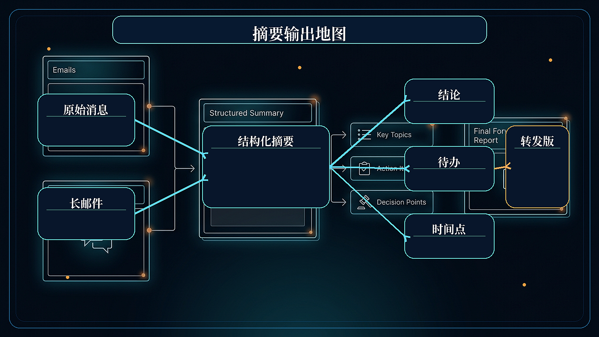

solution-twitter-read-vs-actions-v2-cliproxy.png

Twitter 读取/写操作对比
solution-twitter-setup-chain-v2-cliproxy.png

Twitter 最短启动链路
solution-action-plan-standard-vs-lite-v2-cliproxy.png

行动计划 标准版/精简版
solution-action-plan-output-map-v2-cliproxy.png

行动计划 输出地图
solution-multiplatform-solo-vs-batch-v2-cliproxy.png

多平台 单平台/多平台
solution-multiplatform-output-bundle-v2-cliproxy.png

多平台 输出包
solution-message-summary-complete-vs-quick-v2-cliproxy.png

邮件群消息 完整/快速摘要
solution-message-summary-output-map-v2-cliproxy.png

邮件群消息 输出地图